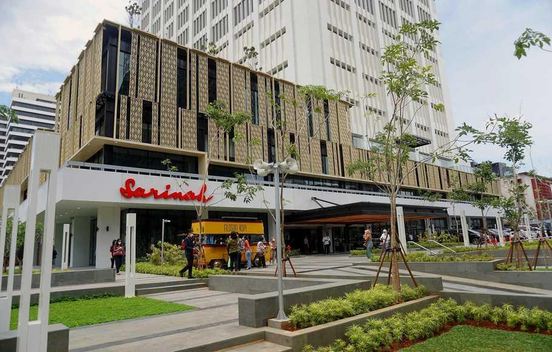

Sejarah Jakarta

Pada awalnya, Jakarta dikenal dengan nama "Sunda Kelapa".
Lalu, diubah menjadi Jayakarta setalah Fatahillah menduduki pelabuhan Sunda Kelapa
dari Portugis pada tanggal 22 Juni 1527.
Pada masa penjajahan Belanda, namanya diubah kembali menjadi Batavia.
Batavia diambil dari nama nenek moyang bangsa Belanda "Batavieren".
Kota ini mulai menjadi pusat pergerakan nasional di awal abad ke-20 yang ditandai
dengan penyelenggaraan Kongres Pemuda Ke-II di tahun 1928.
Sejak masa pendudukan Jepang, kota ini kembali berganti nama menjadi Jakarta
dan di sejak kemerdekaan Indonesia pada 17 Agustus 1945, Jakarta pusat kegiatan politik dan
pemerintahan. Kemudian, Jakarta secara resmi menjadi Ibu Kota Negara pada tahun 1966.
Jakarta kemudian berkembang menjadi salah satu metropolitan terbesar di Indonesia
dan sekaligus menjadi kota megapolitan di dunia.
Jakarta juga merupakan daerah dengan tingkat pertumbuhan ekonomi yang sangat pesat.
Perekonomiannya ditunjang oleh sektor perdagangan, jasa, properti, industri kreatif, dan keuangan.
Tanah Abang dan Glodok menjadi tempat pertukaran uang yang cukup besar di Jakarta.
Sebagai pusat perekonomian Indonesia, Jakarta bukan menjadi pusat perdagangan di Indonesia,
tetapi juga memfasilitasi pembangunan ekonomi di sebagian besar Jawa Barat,
sebagian Banten, Kalimantan Barat, Lampung, Bengkulu, Jambi, Sumatera Selatan,
dan Kepulauan Bangka Belitung.
Kondisi Lingkungan
Jakarta berbatasan dengan Kota Bekasi dan Kabupaten Bekasi di sebelah timur,
Kota Depok di sebelah selatan,
Kabupaten Tangerang dan Kota Tangerang di sebelah barat, dan Laut Jawa di sebelah Utara.
Jakarta dialiri oleh 13 sungai utama, yaitu Kali Angke, Kali Sunter, Kali Ciliwung,
Kali Jati, Kali Mookervarat, Kali Pesanggrahan, Kali Grogol,
Kali Krukut, Kali Baru Barat, Kali Baru Timur, Kali Cipinang,
Kali Buaram, Kali Jati Kramat, dan Kali Cakung.
Akan tetapi, Kali Ciliwung merupakan sungai yang paling mengalami perusakan
dibandingkan dengan sungai-sungai lainnya di Jakarta.
Selain itu, Jakarta juga memiliki banyak taman kota yang berfungsi sebagai daerah resapan air.
Contohnya, adalah Taman Monas yang terletak di jantung Jakarta. Lalu, ada Taman Suropati yang
dikelilingi oleh beberapa bangunan Belanda kuno. Dan, Taman Lapangan Banten yang digunakan sebagai
ruang publik, tempat rekreasi, dan tempat pertunjukkan seni. Dan, Jakarta juga memiliki gedung-gendung
pencakar langit, terutama di daerah Jakarta Pusat. Autograph Tower merupakan gedung pencakar langit
tertinggi di Jakarta dan juga di Indonesia.
Pariwisata
Jakarta adalah salah satu tempat tujuan wisata yang cukup baik di Indonesia.
Untuk meningkatkan jumlah wisatawan yang berkunjung ke Jakarta, pemerintah mengadakan
program "Enjoy Jakarta" yang telah muncul sejak 21 Maret 2005. Berikut ini merupakan
beberapa tempat wisata terkenal di Jakarta.
Monumen Nasional

Terletak di tengah Lapangan Merdeka, Jakarta Pusat, Monumen Nasional
atau Monas didirikan untuk mengenang perlawanan dan perjuangan rakyat Indonesia
dalam merebut kemerdekaan dari pemerintahan kolonial Belanda.
Monas mulai dibangun pada 17 Agustus 1961 dan diresmikan untuk umum
pada tanggal 12 Juli 1975. Monas juga menjadi salah satu destinasi wisata
yang patut dikunjungi selama di Jakarta.
Taman Mini Indonesia Indah
Taman Mini Indonesia Indah atau TMII dibangun pada tahun 1972 dan dibuka
pada 20 April 1975. TMII adalah salah satu destinasi wisata yang
bertemakan kebudayaan Indonesia yang mencakup berbagai aspek kehidupan
sehari-hari masyarakat 34 provinsi Indonesia yang ditampilkan dalam anjungan daerah
berarsitektur tradisional, serta menampilkan aneka busana, tarian, dan tradisi daerah.
Ikon dari destinasi wisata ini adalah Teater IMAX Keong Mas.
Taman Impian Jaya Ancol

Destinasi wisata ini dibuka pada tahun 1968. Ancol pada awalnya merupakan
suatu perumahan mewah model villa yang dimiliki oleh Orang Belanda pada abad ke-18 dan ke-19.
Namun, terbengkalai di akhir abad ke-19, sehingga pada awal abad ke-20, kawasan tersebut
berubah menjadi kawasan budidaya tiram, hingga diubah menjadi rencana kawasan wisata terpadu pada tahun 1966.
Ancol memiliki banyak objek wisata menarik seperti Dunia Fantasi, Atlantis Water Adventure,
Ocean Dream Samudra, SeaWorld Ancol, Gondola, dan lain-lain.
Gedung Sarinah

Gedung Sarinah merupakan mall pertama di Indonesia dan di Jakarta. Gedung ini mulai dibangun pada
17 Agustus 1963 dan diresmikan pada 15 Agustus 1966. Sarinah menjual produk-produk UMKM
yang berupa kerajinan tangan, seni lukis, garmen tradisional, kayu gaharu, dan kayu cendana yang
mewakili kekayaan budaya asli Indonesia yang sangat kaya.
Hotel Indonesia Kempinski

Hotel ini merupakan hotel pertama di Indonesia dan di Jakarta. Hotel ini berlokasi di Jakarta Pusat
dan menjadi landmark bersejarah dan kebanggaan nasional. Tepat di depan hotel ini, terdapat "Patung Selamat Datang",
yang dimaksudkan untuk menyambut para tamu yang mengunjungi Jakarta pada saat Asian Games ke-4 pada
tahun 1962. Hotel ini memiliki berbagai tipe jenis kamar seperti deluxe, grand deluxe,
executive grand deluxe, salon suite, diplomatic suite, dan presidental suite.
Museum Nasional Indonesia
Museum Nasional Indonesia adalah museum pertama di Indonesia. Museum ini juga dikenal
dengan nama "Museum Gajah" karena dihadiahkan hadiah berupa patung gajah berbahan perunggu
yang kemudian dipasang di halaman depan museum. Museum ini memiliki banyak sekali koleksi,
seperti patung Bahairawa, prasasti Singasari, dan sebagainya.
Kota Tua

Kota Tua adalah sebuah wilayah kecil yang dijadikan tempat wisata di Jakarta.
Dijuluki sebagai "Permata Asia" dan "Ratu dari Timur" pada abad ke-16, Kota Tua
dianggap sebagai pusat perdagangan yang strategis karena lokasinya yang
strategis dan sumber daya melimpah. Kota Tua memiliki banyak sekali bangunan yang menarik
dan bersejarah, seperti Gedung Arsip Nasional, Gereja Sion, Museum Fatahillah, Museum Bahari,
dan lain-lain.